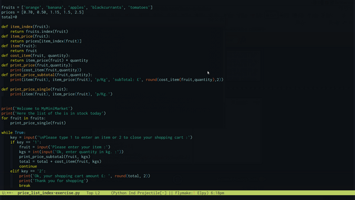

NCC-Log-Readme
Table of Contents
:ID: feef258d-ff21-4c5a-963b-9d92d84213a9
Still dunno whether writing out this report in Eng or in my Lang., so have a quick log report on wtf I'm doing. ;; Sun 4 Dec 14:29:54 GMT 2022 [✓] Let's have a lines about what done so far as I've experienced some gaps in my mental log on it.
Started Level 3 on 04/11/2022 [✓]
Tasks 1.a, 1.b, DL (deadline) by 11/11 done as second try [✓] I could not include the speaker notes [*] As struggling with pp, pptx, I had a org-HTML version posted on GitHub and sent by email but as far as I know, not read, received and probably banned as email is not a mean for submitting task anymore
Fri 18 Nov 2022
I did a new version, including the speaker notes, and as an individual file per task (1.a, 1b) but submitted 1.a only, submission link for 1.b was closed, and not conceded new date as it was (unexpectedly) target achieved in the first review by teacher. 1c, 1d deadline by 18/11 23:59 (I did not get it, so started working on them at home after coming from NCC), and tried submitting but failed.
Fri 25 Nov 2022
Submitted 1.c, 1.d on 25/11 1c & 1d after merged them and get conceded ad-hoc an extension submitting date from Mr Lawrence, new version of 1b declared redundant as the return evaluation declared it achieved [✓]. Working hmw slides projs entirely in class, submitted 2.1, 2.2, 2.3, (I learn afterwards that 2.3 had DL for 02/12)
Fri 02 Dec 2022
2.3 extended version, as declared target not achieved (just before getting out from NCC, though) so I'd got time for submitting 02/12 23:59 [✓] done
DONE 3.1, 3.2
DL better on 02/12 but by 05/12 3.5 DL 09/12 but better check online on NCC portal, Risk-Management task 3.1 & 3.2 submitted [✓] done
3.3, 3.4,
Have also deadline by 05/12
submitted task 3.3, 3.4 [✓]
DONE draft notes
- 3.3
Describe how to reduce the risk and follow mitigation, taking into consideration the following: a) missing/unclear requirements [✓] b) skills shortage c) time d) budget e) resource shortage f) decision-making.
- Budget
Regarding interdependence, is not hidden science to infer that budget issues have a direct correlation with the entire performance of the project, its schedule and the quality of deliveries. I have found specialists mention as the top-frequent-ranked two moments in the process of getting into cost overrun issues, at starting, which they call tight-fitting budget planning and in execution which is usually a consequence of inaccuracy in estimations but since the likelihood of getting into cost issues is around 70% in the software industry, this mishap should make it get removed from the list of unpredictable facts. relocate | transfer
overseen constraints | restrictions
Time is a pillar in the project management.
Risks related to decision-making is an entire science. Some research report that propensity to take risks or avoid and spent time in gaining information and working in group are connected inversely.~ - DONE 3.4
For each of the identified risk types, propose potential mitigations, taking into consideration key elements of the following: a) Scrum b) Kanban c) Waterfall d) Agile.
DONE 3.5
dl 09/12, R.M.,The Critical Path, task 5 [✓] submitted Explain what is meant by a project’s critical path
DONE draft notes
form P.M. dict. In project management, the critical path is the longest sequence of tasks that have to be completed. This is to successfully complete a project.
- Behind the scenes, (RECAP: as said in previous comments, the time variable involves a mitigation plan for time-related issues that will start by default at the start of the project) I would call it a critical path chart, an easy-to-visualize abstraction to monitor contingencies related to control of work time, easy to share, to use in meetings (related to timeline assessment) to identify, detect delays, establish dependencies evaluation schedules (especially when there are more than one task running simultaneously or they are connected by mutual dependencies)
- Terminology
- Slack How long an ativity can be delayed without extend or increasing the completion time
- facing more than one dependency the highest EF (Earliest-Finish) preceding an activity will be the ES (Earliest-Starting) activity time, (then add its own t so that have its own EF earliest-finish time).
- the proj. completion time is the highest of the EF (Earliest-Finish) time
- When doing the backwards pass we obtain the latest-start-times(LS) by subtracting the Actv. time from the LF, the latest-Finish-time of its successor.
- facing two dependencies when doing the backwards pass, the latest-finish-time(LF) of an activ. must be the minimum of the LS (Latest-Start-time) of its successor.

- Slack How long an ativity can be delayed without extend or increasing the completion time
Fri 09 Dec 2022
Task 6 Team management Positive working relationship and conflict management are essential to resolving technical issues that may arise between project members. (make it) In a Word document, [✓]
DONE a. Explain the importance of developing working relationships with other teams
[my keywords] Positive working relationships [✓] | team[✓] | other teams [✓] Technical issues [✓]
Positive working relationship and conflict management are essential to resolving technical issues that may arise between project members.
3.6 Explain the importance of developing working relationships with other teams.
Introduction
Two remarkable keywords are mentioned in the description of this task, 'working relationships' and 'positive thinking. Let me sketch out them first to give some context to my view on this.
Generally speaking, positive working relationships are mandatory in any work environment.
Here let's use the more broad meaning for 'positive' as anything we assess being in direct correlation to a given target. And, in this sense, positive thinking itself has become standard protocol for dealing with everyday problems of any kind as well, though the definitions it makes of things as it maps and marks its objects and the scope of conventions it assumes as proposal rules are not of unanimous adoption yet, and probably never will be. However, a handful of principles arise by default, and we learn to adopt them as we integrate ourselves into the culture since the heart of this, as I see this, is the law itself.
Law has different, or better said, global and local configurations and implementations, their how-to ‘s and why 's are out of scope here, but a keystone we have to generate order in this matter is that all those definitions and statutory prerogatives we call rights, privileges, and responsibilities we all live and work for and around are the true package of positive, and negative by contradiction, considerations and concerns that define or predefine any kind of human interaction, therefore, any possible conflict.
There are different approaches to this subject, I did not mean to lecture on this but to point out a pattern that works in any case, and the reason I felt I should start with the observation that follows: ‘…yet its suitability is defined by its friendship addressing with given scopes, or ambit, all of them shall end up law-abiding and in no manner prevailing over it’.
That is the pattern, now to breakdown particularities what we would have here is a context which should be defined by the scenarios the software industry involves by nature, as product, what its production involves and what labour involved demand.
Now let's get started by the conclusion.
The first thing I wanted to highlight is that working in community fashion has a special meaning in the software industry, even if we work freelance. As potential members of a development team, this is more tangible, of course. We submit our production to a community that, in turn, has been here before us producing things that, in practice, are our input material.
Also is true that there is nothing in the history of technology that has not been the result of a network, a community that has previously been accumulating small contributions on which we built our craft, and no contribution or contributor, in particular, even the most innovative ones, breaks this rule. Let us think, for example, of two well-known cases: the contribution of Newton or Einstein. Newton already used to point out he could see further because of “standing on the shoulders of giants”.
Therefore anything we do in the software development industry is done under the conventions of a cut edge community and with the community itself with an eye on whatever we produce individually or as part of a team.
So that a explicit positive mode by default is the communication language that could build efficient working teams.
Once we notice that protocol matters in the work interaction, the next might be to brainstorm a list of recommendations that are or would be directly connected if we were to outline a minimal approach.
Here my top nine considerations:
- Notice that in some legislations, computer code, coding languages and elaborations we were able to make with it are considered a way of expressing ideas and as such is protected as part of free speech.
- Communicate ideas or opinions with transparency criteria.
- Accepting critique is preliminary to submitting critique.
- Conflict is there out, always has been and always will be, get comfortable with confrontation but only constructive terms shall be supported.
- Look after both your interest and the others at once.
- In case of disruptions look after for terms acceptable for all involved.
- Invest in yourself.
- Get disciplined about collective agreements.
- Take your time before saying yes to work requests but if you say yes get disciplined about outcomes also on those that might proof otherwise a previous plan, concept or consideration.
DL 09/12/2022 on a word doc. Ref NCFE/L3CCP 603/5793/9 pag. 14. I was starting to sketch my answer to this topic pointing out its relationship to conflict management, a very extended subject when is about project management, but it seems that the instructor had broken down the subject, and this, the 3.6-bit is going to be the very first stage when on identifying the arising of conflict in real work environments, so it would be probably not necessary to jump into a so deep connection but since this topic bit is also the first work field related to prevention in an eventual mitigation plan related to conflict management and effective delivery of software, as mitigation and prevention are two sides of the same plan separated by time, and the triggering eventualities are always present, we shall start straight to elaborate on the working relationships we would need to become facilitators of the work flow, as we call it in project management slang language, efficiently when the differences show up.
Fri 06/01/2023
DONE Editing 3.6 Task
Intro
;;;;;;;;;;;;;;;draft to paste on the xdoc asgnmnt. Having been instructed to explain the context of the latter statement I should say that the idea behind mentioning the legal implications is methodological, as once identified what the max risk for every context, work field, or case is, the next draft is to have a pool of options to mitigate consequences, and in between, being proactive and take steps to prevent conflicts from escalating to the point where legal action is necessary. As we have to gain expertise in this area of practice, I would call this point of view 'defective', or perhaps, using here the suffix 'ual' so that, a 'defectual' approach to management.
A defectual approach to something is a kind of reverse engineering to understand how to prevent the system from issues by understanding failures. It can be an important tool for understanding and solving problems, especially when the focus is on identifying and correcting specific issues or defects. By analyzing failures or problems and identifying patterns in their occurrence, it is possible to understand the root causes of the problems and develop strategies to prevent similar problems from happening in the future. Actually, designedly or not, developing techniques to deal with issues starts back by collecting failures first, then identifying patterns in their malfunction, understanding them, then taking proactive measurements, or making rules to prevent them. In fact, it is often the case that protocols, frameworks, and policies currently in use were developed in response to problems or failures that have ever occurred. Addressing potential problems before they occur can involve making rules or guidelines to specifically address the problems at least as they have been identified, as well as related problems that may be extensions of those initial problems.
Now, apart from the obvious way of dealing with this risk as it is to have legal counsel or a human resources professional involved in the conflict resolution process. As they can provide guidance on the legal issues at hand and help to ensure that the resolution process is fair and compliant with applicable laws and regulations. The main purpose of this address to the question is to prevent by being proactive, having a plan, and having clear policies and procedures in place.
Some strategies in this direction include:
Effective communication: Encourage open and honest communication, and work to establish clear channels of communication to help prevent misunderstandings and resolve issues before they escalate. Conflict resolution training: Provide employees with training on conflict resolution and communication skills to help them handle conflicts more effectively. Fair policies and procedures: Develop and communicate clear policies and procedures for addressing and resolving conflicts in the workplace. Mediation: Use mediation or other alternative dispute resolution techniques to help resolve conflicts before they deepen.
4.1 Working relationships with other teams,
teams with different settings or interests, as this does happen nowadays? When working with other teams that probably have different working styles, interests, organisation, etc. is also essential to be proactive in managing conflicts that may arise, and extensions of the above-outlined mind setting are still valid. Some strategies that can be effective in this situation include: Clearly communicate expectations and roles: Make sure that all parties have a clear understanding of their responsibilities and how they fit into the overall project or goal. Identify common goals: Look for areas of common ground and focus on shared goals to help build trust and cooperation. Use a mediator: If conflicts cannot be resolved through direct communication, consider using a mediator or other neutral third party to facilitate the resolution process. Establish clear lines of communication: Establish clear channels of communication and make sure that all parties have a way to voice their concerns and suggestions. Be open to compromise: Be willing to compromise and find solutions that meet the needs and interests of all parties involved. By using these strategies, you can effectively manage conflicts and work effectively with external teams, even when there are differences in interests.
4.2 Positive Thinking as Proactive to Conflict Mindset.
Here, in the improvement of productivity, is where positive thinking as a mentality fits. As in working environments, positive thinking can be a powerful tool for improving performance, building strong relationships, and creating a more positive and productive work culture. Some specific ways in which positive thinking can be beneficial in the workplace include: Improved performance: A positive attitude can help individuals to stay motivated and focused, and can lead to better performance at work. Stronger relationships: A positive attitude can help to build trust and strengthen relationships with colleagues, clients, and customers. Enhanced problem-solving: A positive mindset can help individuals to approach problems in a more creative and constructive way, leading to better solutions. Improved communication: A positive attitude can encourage open and honest communication, which is essential for building strong working relationships and resolving conflicts. Greater resilience: A positive attitude can help individuals to be more resilient in the face of challenges and setbacks, and to bounce back more quickly from failures.
In general terms this can involve re-framing negative thoughts or experiences in a more positive light, setting goals and working towards them, and cultivating gratitude and mindfulness. However, positive thinking is not about ignoring or denying negative experiences or challenges, but rather about finding ways to cope with adversity and build resilience. And, whit this experience, contribute to a more positive and productive work culture, where individuals are more likely to collaborate and support one another. While it is not always easy to maintain a positive attitude, especially in challenging or stressful situations, it is an important skill that can have a powerful impact on work performance and relationships.
4.3 Conflict Management Techniques and Effective Team Collaboration
First, we probably should highlight how collaboration can be affected in both positive and negative ways in the dearth of a system to deal with conflict. And in doing this I find it more elucidative to look over what a so potent tool collaboration is by describing how good is whenever is present and how risky a scenario becomes when is not promoted conveniently.
On the positive side, collaboration can lead to a number of benefits, including: Greater efficiency: When people work together, they can often accomplish more than they could on their own. Improved problem-solving: Collaboration allows people to bring different perspectives and ideas to the table, which can lead to better solutions. Greater creativity: Collaboration can foster creativity and innovation, as team members inspire and challenge one another to come up with new ideas. Stronger support: Collaboration can provide a sense of support and encouragement, which can help people feel more confident and motivated. More fun: Working together with others can be enjoyable and rewarding, and can help to create a positive and enjoyable work environment.
On the negative side, collaboration can also be affected by a number of challenges, including: Communication breakdowns: Miscommunications or misunderstandings can lead to conflicts or delays in collaborative projects. Different working styles: Team members may have different approaches to work, which can lead to misunderstandings or conflicts. Lack of trust: If team members do not trust one another, it can be difficult to establish effective collaboration. Conflicts of interest: Collaboration can be difficult if team members have conflicting interests or goals.
- 4.3.a Collaboration with external teams[?]
When collaboration is related with external teams it usually understood as outsourcing. And Outsourcing is a common practice in the software industry, and it can be a useful tool for addressing a variety of issues and challenges. However, it is not always the best or only solution, and it is important for organizations to carefully consider the pros and cons of outsourcing before making a decision.
Outsourcing can be a useful tool for addressing issues such as: Access to expertise: Outsourcing can allow organizations to access specialized expertise or skills that they may not have in-house. Cost savings: Outsourcing can be a cost-effective way for organizations to access certain services or capabilities. Flexibility: Outsourcing can provide organizations with the flexibility to scale up or down their resources as needed.
However, outsourcing can also have drawbacks, such as: Loss of control: When organizations outsource certain functions or activities, they may lose some control over how those tasks are performed. Communication challenges: Working with external partners can sometimes be more complex, and can involve additional communication challenges. Cultural differences: Outsourcing can sometimes involve working with partners from different cultural backgrounds, which can present additional challenges. Overall, outsourcing can be a useful tool for addressing certain issues and challenges in the software industry, but it is important for organizations to carefully consider the pros and cons before making a decision.
- 4.3.b How-to Promote a effective team collaboration?
In my opinion, collaboration arise not so difficult if the land is encouraging, it could seem recurrent but we are social by nature. Here are five top rules or techniques for effective team collaboration: Establish clear goals and roles: Make sure that all team members have a clear understanding of the team's goals and objectives, as well as their own roles and responsibilities. Effective communication: Establish clear channels of communication and encourage open and honest dialogue among team members. Collaboration: Encourage teamwork and collaboration, and look for ways to pool knowledge and expertise to achieve shared goals. Respect diversity: Recognize and value the diverse backgrounds, experiences, and perspectives of team members. Problem-solving: Encourage a culture of continuous improvement and problem-solving, and work together to find creative solutions to challenges and roadblocks.
- 4.3.c A mention of specific conflict management techniques for effective sessions of team collaboration.
There a few of techniques for sure but this is my favorite:
- Win-win solution | accommodation
The idea of a win-win solution to conflicts in work environments is similar to the concept of accommodation, which involves finding ways to address the needs and interests of all parties involved in the conflict. In a win-win solution, both parties involved in the conflict are able to achieve their goals and have their needs and interests met. This can involve compromising and finding solutions that meet the needs of both parties, rather than one party winning at the expense of the other. Accommodation is a collaborative approach to conflict resolution that involves finding ways to meet the needs and interests of all parties involved. It involves being open to the perspectives and concerns of others, and finding ways to address these concerns in a mutually satisfactory way. Overall, the goal of both win-win solutions and accommodation is to find resolutions to conflicts that are fair and respectful, and that promote understanding and collaboration among the parties involved.
4.4. Impact of Innefective Working Relationships
—On the other hand, poor working relationships that do not care or guard against conflicts can have a significant impact on an organization and its ability to achieve its goals. Poor working relationships can lead to a number of problems, including: Decreased efficiency, as an effect of communication issues, can lead to delays, mistakes, and other problems that can undermine the success of a project. Decreased motivation and engagement. The dearth of a plan to deal with interpersonal conflict can lead to stress or a negative environment, which can have a negative impact on employee performance, motivation and commitment. Increased conflict: Poor working relationships can increase the risk of conflicts arising, which can be disruptive and damaging to an organization. Decreased innovation: When working relationships are poor, it can be difficult for team members to collaborate and come up with new ideas, which canlimit the organization's ability to innovate. Overall, it is important for organizations to focus on building strong working relationships, as this can have a positive impact on the organization's ability to achieve its goals and be successful.
4.5 How team members can reflect on progress and identify improvements.
A team could be full of expert individuals individually but not always their working relationships are the best. This is the first observation that may serve as a blueprint for evaluation purposes, from a given starting point to another moment in the future whenever we want to perform an evaluation of progress.
Team working is something that is learnt working in team, and probably each team has its own specificities. As it is true that even teams full of highly skilled and expert individuals can struggle to perform effectively if their working relationships are poor. Strong working relationships are essential for effective teamwork and collaboration, and can be a key factor in the success or failure of a project. Poor working relationships can lead to a number of problems, including communication breakdowns, lack of trust and cooperation, and increased conflict. These problems can in turn lead to delays, mistakes, and other issues that can undermine the success of a project. On the other hand, strong working relationships can help teams to work more effectively and efficiently, and can foster a sense of trust, collaboration, and support that can be key to project success. Overall, it is important for teams to focus on building strong working relationships, as well as on the skills and expertise of individual team members, in order to perform effectively and achieve their goals.
Fri 13/01/2023
Coding Standards
Following the last week exercise about lists, indexing data sets, routines-functions distinction, I did for this week an example of three versions of the same script, a first one following more personal coding standards, a second one following standards partially, and a third one more friendly per instance for beginners when dealing with giving procedures, variables names etc. Find attached screenshots of them respectively

Figure 1: example following personal conventions

Figure 2: a version of the same script above following standards with exeption of argument names.

Figure 3: a third one version of the same script beginners friendly with coding standards.
Fri 20/01/2023
Dictionaries
Using dictionaries in Python.